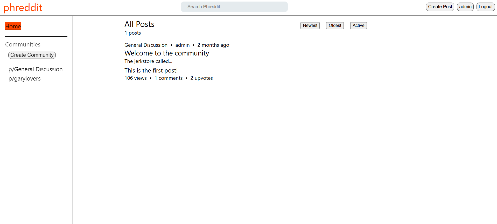
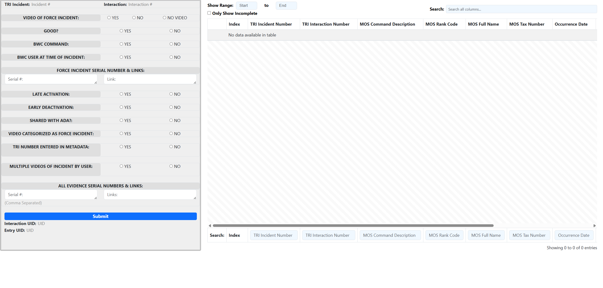

Phreddit is a clone of the popular site reddit.com. It features a user database, posts, communities, comments, voting, and karma. It was built with the MERN stack, utilzing MongoDB, Express, React, and Node.js. Phreddit was created to develop my skills in these technlogies and get familiar with stacks commonly used in the workplace.
• Create Posts: Users can create posts to express their thoughts on a certain concept.
• Create Communities: Phreddit hosts communities where users can interact with other like-minded people.
• Commenting: Users can react to posts using coments, creating threads based on relevant discussions.
• Voting: Posts can be upvoted and downvoted, affecting a user's karma.
RECAP is a centralized database application designed to assist employees of the NYPD Compliance Section in efficiently categorizing TRI records. Built with Flask, Python, JavaScript, and SQLite for the backend, and HTML, CSS, and the Bootstrap framework for the front end, RECAP provides a user-friendly interface to streamline the categorization process and ensure accurate record-keeping.
• Centralized Database: Easily manage and categorize TRI records.
• User-Friendly Interface: Accessible and intuitive UI built with Bootstrap.
• Secure Data Handling: Ensures compliance with NYPD data protection policies.
• Customizable Reports: Generate and export categorized data for further analysis.
NameCube is a clone of the BIOS screen from the Nintendo GameCube. It is not an exact clone, however it is a recreation of an interactive floating cube in space. One can interact with the multiple faces of the cube and it will move and bounce around. It exclusivley uses HTML, CSS, and JavaScript to handle the 3D movement. I did this as a way to challenge myself, using math to achieve my goal. Additionally, I included my contact information to use the site as a mini-portfolio website. Anyone visiting the site can interact with the cube and learn about who I am.